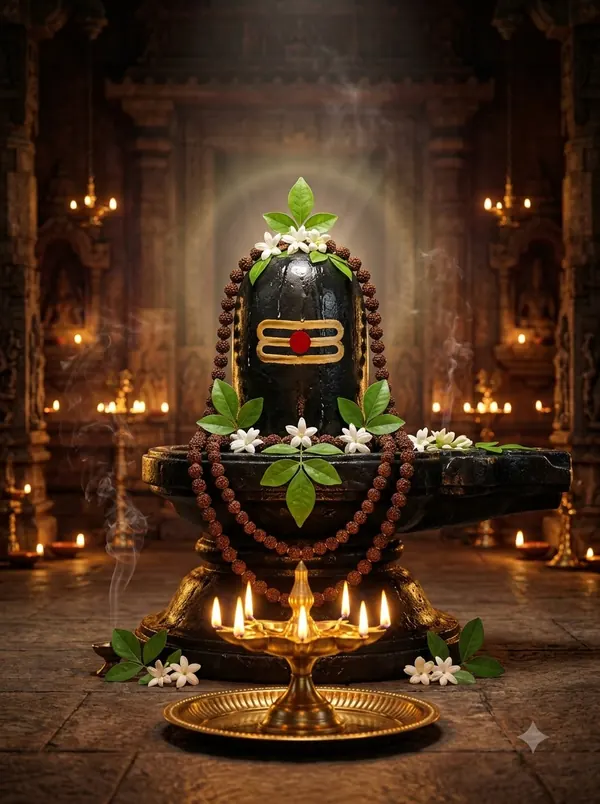

ॐ जय शिव ओंकारा — शिव आरती
‘ॐ जय शिव ओंकारा’ भगवान शिव की सबसे प्रचलित आरती है। इसके अंतिम पद में ‘शिवानन्द स्वामी’ का नाम आता है। सोमवार, सावन और महाशिवरात्रि पर इसे विशेष रूप से गाया जाता है।
इस आरती में ब्रह्मा, विष्णु और शिव को एक ही ओंकार के तीन रूप बताया गया है।

ॐ जय शिव ओंकारा, स्वामी जय शिव ओंकारा। ब्रह्मा, विष्णु, सदाशिव, अर्द्धांगी धारा॥
हे ओंकार स्वरूप शिव, आपकी जय हो। ब्रह्मा, विष्णु और सदाशिव आप ही हैं, और देवी पार्वती आपकी अर्धांगिनी हैं।
एकानन चतुरानन पञ्चानन राजे। हंसासन गरूड़ासन वृषवाहन साजे॥
आप एक मुख (विष्णु), चार मुख (ब्रह्मा) और पाँच मुख (शिव) रूप में विराजते हैं — हंस, गरुड़ और नंदी आपके वाहन हैं।
दो भुज चार चतुर्भुज दसभुज अति सोहे। त्रिगुण रूप निरखते त्रिभुवन जन मोहे॥
आपके दो, चार और दस भुजाओं वाले रूप बहुत सुंदर हैं। आपके त्रिगुण रूप को देखकर तीनों लोकों के लोग मोहित हो जाते हैं।
अक्षमाला वनमाला मुण्डमाला धारी। त्रिपुरारी कंसारी कर माला धारी॥
आप रुद्राक्ष, वनमाला और मुंडमाला धारण करते हैं। त्रिपुरासुर और कंस का संहार करने वाले रूप आपके ही हैं।
श्वेताम्बर पीताम्बर बाघम्बर अंगे। सनकादिक गरुणादिक भूतादिक संगे॥
आप श्वेत, पीले और बाघ-चर्म के वस्त्र धारण करते हैं। सनक आदि ऋषि, गरुड़ आदि और भूतगण आपके साथ रहते हैं।
कर के मध्य कमण्डलु चक्र त्रिशूलधारी। सुखकारी दुखहारी जगपालन कारी॥
आपके हाथों में कमंडल, चक्र और त्रिशूल हैं। आप सुख देने वाले, दुख हरने वाले और संसार का पालन करने वाले हैं।
ब्रह्मा विष्णु सदाशिव जानत अविवेका। प्रणवाक्षर में शोभित ये तीनों एका॥
अज्ञानी लोग ब्रह्मा, विष्णु और शिव को अलग मानते हैं, जबकि ॐ अक्षर में ये तीनों एक ही हैं।
लक्ष्मी व सावित्री पार्वती संगा। पार्वती अर्द्धांगी, शिवलहरी गंगा॥
लक्ष्मी, सावित्री और पार्वती साथ विराजती हैं। पार्वती आपकी अर्धांगिनी हैं और गंगा आपकी जटाओं से बहती हैं।
पर्वत सोहैं पार्वती, शंकर कैलासा। भांग धतूर का भोजन, भस्मी में वासा॥
पार्वती पर्वत पर और शंकर कैलाश पर शोभा पाते हैं। भांग-धतूरा आपका भोग है और भस्म में आपका वास है।
जटा में गंग बहत है, गल मुण्डन माला। शेष नाग लिपटावत, ओढ़त मृगछाला॥
आपकी जटाओं में गंगा बहती है, गले में मुंडमाला है, शेषनाग लिपटे हैं और आप मृगछाला ओढ़ते हैं।
काशी में विराजे विश्वनाथ, नंदी ब्रह्मचारी। नित उठ दर्शन पावत, महिमा अति भारी॥
काशी में आप विश्वनाथ रूप में विराजते हैं और नंदी आपके द्वार पर हैं। रोज़ आपके दर्शन पाने की महिमा बहुत बड़ी है।
त्रिगुणस्वामी जी की आरती जो कोइ नर गावे। कहत शिवानन्द स्वामी, सुख संपत्ति पावे॥
शिवानंद स्वामी कहते हैं कि जो कोई त्रिगुण-स्वामी शिव की यह आरती गाता है, उसे सुख और संपत्ति मिलती है।
ॐ जय शिव ओंकारा का पाठ पूरा हुआ।
किसी अपने को WhatsApp पर भेजेंपाठ पारंपरिक है और अलग-अलग क्षेत्रों में शब्दों में थोड़ा अंतर मिलता है। अर्थ सरल हिंदी में OmKiran Bhakti ने लिखा है। कोई त्रुटि दिखे तो YouTube पर कमेंट करके बताएँ।